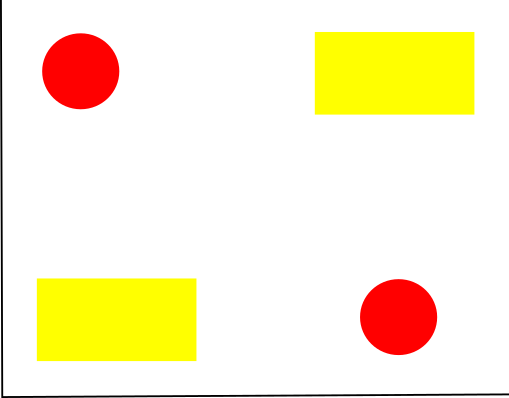

Machine Learning
Machine learning is a class of analysis techniques that allows the computer to self improve the algorithm. Examples include finding best fit lines, image recognition, speech recognition, search result optimisers and YouTube suggestion algorithms. Machine learning has become a huge field in recent years, with many researchers and companies spending many hours working on developing more sophisticated algorithms.
While machine learning began in a very simple way in the late 50s, it didn't enter the modern form until the 80s. Even then, it took until the mid 00s to become the big field we know today. This was because it was held back by a couple of physical hardware limitations. Firstly, machine learning requires, in general, very large datasets. It wasn't until the advent of "big data" in the forms of large internet databases that this was widely available for a large range of applications. Secondly, computers with powerful enough GPUs. Typically, each calculation that the machine is required to make is not very challenging, but there are many of them. Possibly billions or trillions that need to be made in order to create a network. Sufficient parallel processing capacity is essential for this. Finally, memory. Large amounts of data needs to be contained in memory at any one time for the process to be efficient. While whole datasets typically can not be held in memory still, we can work around this problem to some extent by using a clever technique called epochs, but it has limitations.
In this section, we will learn to build some very basic machine learning tools. We will work in Spyder as part of Anaconda. Anaconda is available from here. The software is freely available, and shouldn't provide any challenge to install. Once installed open the Anacona Prompt (not your machine's command prompt) and use conda install keras. Keras is an API for machine learning that will come in very useful in the later sections of this tutorial. Also, as was said at the beginning, computer hardware is a limiting factor. More complex machine learning algorithms could proceed at a snail's pace on lower end machines. If your computer does have a GPU then you will need Nvidia CUDA 10.1
K-means
Really Basic Idea
Imagine we have a set of data like this
How many "clusters" of data are there here? How should they be grouped? We could group them like this...
Or like this...
In fact, there are many ways in which we could cluster these data points! Maybe we could create a machine learning algorithm to do this for us? This technique is known as K-means, and has been around for more than half a century now. K-means has one free parameter, meaning one value that we can choose; the algorithm can not decide the value of K. What does K represent? K represents the number of clusters in our data. The algorithm then groups the data points into those clusters. How do we go about doing this?
Suppose we have the above data (red cross) and we know that there should be two clusters (that is, K=2), but we don't know which of the data points belong to which cluster. We start by placing two "centroids" at random (these are not data points, nor necessarily at the location of data points). The two centroids in this example are the blue and green cross.
In this step we assign data points to either the blue cluster or the green cluster based on which one is closer.
We then recompute where the centroids should be, and the decision boundary changes. We then reassign each data point to the nearest cluster. We repeat this calculation until there are no changes.
Mathematical Background
So how do we actually go about performing K means? Thankfully, it is actually pretty simple! First we need to begin by creating K random centroids
$$\mu_1^{(0)}, \mu_2^{(0)}, ..., \mu_K^{(0)}$$A note about the notation. Each μ is a centroid. The subscript is just a number label, we will have K of them. The superscript (0) indicates that this is the zeroth iteration, or in other words, the starting position.
$$C^{(t)}(j) \leftarrow arg \enspace \underset{i \epsilon \{1,...,K\}}{min} \parallel \mu_i-x^j \parallel^2 $$We then classify each data point to one of the centroids. arg min just means to take the lowest value. This equation looks complecated, but it just means "take each data point and assign it to the nearest cluster"
$$\mu^{(t+1)}_i \rightarrow \frac{1}{\mid \{j:C(j)=i\} \mid} \sum_{j:C(j)=i} x^j \enspace for \enspace all \enspace i \epsilon \{1,...,K\}$$Again, the above equation looks complicated, but we are just moving the centroids so that they are in the centre of their cluster of data points.
We then repeat steps two and three until there are no changes
Limits of K-means
K-means has several important limitations that we need to understand.
First, K-means does not provide a way to select K. Think back to the opening example... how many clusters are there? 2? 3? 4? 7? This is a choice that the programmer will need to make. If you do not know how many Ks there are, the only real option to try is running the algorithm on the same data while varying K, and see if any make sense. This isn't particularly robust. However, in most cases the problem itself will select K. Say, for example, we need to classify faces into "male" and "female", then K=2 obviously.
Another issue with K-means is that the final solution is very sensitive to initial placement. Each time you run the algorithm with different starting locations, you will likely get a different result. This is because the equations are all sensitive to the centroid locations.
K-means does not have a notion of outliers. If there is a significant outlier, and a point is randomly put very near that outlier, it probably won't move away from it. The algorithm is very sensitive to any outliers, fake data, unusual results. It is not robust.
K-means is very sensitive to overlapping data and funky data shapes. Two gaussian data sets overlapping can not be distinguished with K-means. It also struggles when the data is not clustered as "blobs", for example two interlocking spirals can not be distinguished by K-means.
Real life example
To get started with this tutorial, start by opening the Anaconda prompt and type conda install sklearn. This will update the sklearn module, or install it if it isn't already.
We begin with typical Python imports
import matplotlib.pyplot as plt
from sklearn.datasets.samples_generator import make_blobs
from sklearn.cluster import KMeans
Here we are just importing the fucntions we need. We just need a simple plotting function; matplotlib is a great choice for that. sklearn has some great functions for generating clustered data and also a built in K-means algorithm, which we will make use of.
X, y_true = make_blobs(n_samples=800, centers=6, cluster_std=0.6, random_state=0)
plt.scatter(X[:, 0], X[:, 1], s=50)
plt.show()
In the first line above we are generating some data. We have 6 clusters, 800 data points and the standard deviation of each cluster is 0.6. Note that this form of generation is pseudorandom, and we will get the same result each time, however the data will be distributed according to how we set it. The data should look like this
kmeans = KMeans(n_clusters=6)
kmeans.fit(X)
y_kmeans=kmeans.predict(X)
As we discussed earlier, the K-means algorithm can not know how many clusters are in the data, we need to specify it in n_clusters. Try varying the value and see what happens. Other than that, the rest of these lines just do the mathematical operating that we discussed earlier.
plt.scatter(X[:, 0], X[;, 1], c=y_kmeans, s=50, cmap='viridis')
centers=kmeans.cluster_centers_
plt.scatter(centers[:, 0], centers[:, 1], c='black', s=200, alpha=0.5)
plt.show()
And this is the last of our K-means work. The first three lines are just making a scatter plot. The first line colours each of the sets of points as identified by the algorithm, lines two and three place the centroids. This is the output we will get.
We can try playing with the parameters a little bit. Just an example, I generated the data with 6 clusters but set the standard deviation to 3, and then performed the K-means with four clusters.
As you can see, there aren't really any clusters, and if I didn't know that the data was generated from 6 clusters, there would be no way to tell. I could, in essence, cluster this data however I like. Be careful with machine learning algorithms, they will not be able to identify obvious flaws!
Perceptron
The perceptron is a linear seperator. In some ways, it works just like K-means. However, this time we are trying to draw a straight line to divide a set of points rather than using centroids and distance between them.

The image above is an example of the perceptron. It contains some input values, weights, a sum and a step function. The constant input is usually set to one while the x inputs are features of what is being classified. The weights are multiplied by the input - it is these weights that the perceptron must "learn" to be able to predict. What is the purpose of the constant? It allows the perceptron to move the decision boundary away from the origin of the feature space, in other words, the line won't have to pass through (0,0) on the graph. The weighted sum is literally just the sum of the inputs times weights. This value is passed to a step function. If the value is above a threshold then the output value is, say, 1 and 0 if below. These will correspond to something, like 1 being a car and 0 being a plane.
So, how does the perceptron learn?? For a given training example we first calculate the classification by
$$y_j(t) = f( \mathbf{w(t)} \cdot \mathbf{x_j})$$where \(y_j(t)\) is the weighted sum of the input, \($\mathbf{w(t)}\) is the weights and \(\mathbf{x_j}\) are the features.
And then we update the weights
$$w_i(t+1) = w_i(t) + (d_j - y_j(t))x_{j,i} \enspace for \enspace all \enspace features \enspace 0 \leq i \leq n$$Where \(d_j\) is the desired output.
So, let's build our own perceptron
import matplotlib.pyplot as plt
import numpy as np
def predict(row, weights):
activation = weights[0]
for i in range(len(row)-1):
activation += weights[i+1] * row[i]
return 1.0 if activation >= 0.0 else 0.0
So, we import a few familiar things. Then the function predict is what will eventually use weights to predict the class. You can see that it has the elements that we've been talking about - a sum function and a step activation function. Here we set the threshold to 0, but it could (in theory) be any number (but this could make training much longer)
def train_weights(train, l_rate, n_epoch):
weights = [0.0 for i in range(len(train[0]))]
for epoch in range(n_epoch):
sum_error = 0.0
for row in train:
prediction = predict(row, weights)
error = row[-1] - prediction
sum_error += error**2
weights[0] = weights[0] + l_rate * error
for i in range(len(row)-1):
weights[i+1] = weights[i+1] + l_rate * error * row[i]
print(">epoch=%d, lrate=%.3f, error=%.3f" % (epoch, l_rate, sum_error))
return weights
The Train weights function will train the weights so that they are better predicting the classes. You can see what we've been talking about here, adjusting the weights if we have an error.
dataset = [[2.7,2.0,0],
[2.4,2.3,0],
[3.3,4.4,0],
[1.3,3.8,0],
[1.0,3.0,0],
[7.6,8.7,1],
[4.3,9.0,1],
[6.9,1.7,1],
[7.6,-1.2,1],
[7.6,3.5,1]]
l_rate=0.1
n_epoch = 40
weights = train_weights(dataset, l_rate, n_epoch)
print(weights)
Here we make some data on a graph. Now, there are very few example data points here, in a real case we would want many, many more. I chose an epoch number of 40 and a learning rate of 0.1. These are free parameters that you need to choose. If you have a low learning rate, you'll probably need a higher epoch number. However, a high learning rate and you might overshoot the minima and not be able to solve the problem. Feel free to use any data you like here (but make sure it is linearly separable or this will not work - plot it and see if you can put a ruler through the data dividing the two classes)
for row in dataset:
prediction = predict(row, weights)
print("Expected=%d, Predicted=%d" % (row[-1], prediction))
plt.figure(1)
for i in dataset:
c = "rx" if i[2]==0 else "bx"
plt.plot(i[0], i[1], c)
x = np.linspace(1, 8, 100)
m = -(weights[0]/weights[2])/(weights[0]/weights[1])
c = -weights[0]/weights[2]
plt.plot(x, m*x+c, "k")
plt.show()
Finally we just want to make a graph. We plot the data points and the line that divides them.
MLP
If we can already classify points with K-means, why do we need a more complex multilayered perceptron? Consider the XOR problem that looks like this
K-means is unable to solve the XOR problem - you can not place two points on this graph to correctly classify both sets. With a multilayered perceptron with three layers, we are in principle caapble of solving any classification problem, however there are some caveats that we will get into later.
So, what are each of the layers doing? The first layer is a linear separator. The second layer is combining linearly separated regions into shapes. The third layer combines simple shapes into more complex shapes (think things like a circle with a triangle cut out). You can see how any arbitary separation problem can be solved with three layers, but the caveat is that you may need close to infinite nodes in each layer. This is why it is preferable to instead have more layers, for concern of training time.
How do we train a MLP? Unlike the perceptron, there is no direct error signal for most of the layers. How do we figure out by how much our weights and biases need to change? We need to introduce backpropagation! Backpropagation has two phases: a forward pass phase and a backwards pass phase. The forward pass phase computes the netowrk's signal by propagating the input through the network. The backwards pass phase computes the error signal by propagating the error backwards through the network.
This time, we will use Tensorflow to help simplify the problem.
import numpy as np
import tensorflow as tf
import matplotlib.pyplot as plt
num_features = 2
num_iter = 10000
display_step = int(num_iter / 10)
learning_rate = 0.1
num_input = 2
num_hidden1 = 2
num_output = 1
Here we just set up a few inputs and variables that we will use later.
def multi_layer_perceptron_xor(x, weights, biases):
hidden_layer1 = tf.add(tf.matmul(x, weights['w_h1']), biases['b_h1'])
hidden_layer1 = tf.nn.sigmoid(hidden_layer1)
out_layer = tf.add(tf.matmul(hidden_layer1, weights['w_out']), biases['b_out'])
return out_layer
This function will make the multilayered perceptron once provided with the weights and biases.
x = np.array([[0, 0], [0, 1], [1, 0], [1, 1]], np.float32)
y = np.array([0, 1, 1, 0], np.float32)
y = np.reshape(y, [4,1])
X = tf.placeholder('float', [None, num_input])
Y = tf.placeholder('float', [None, num_output])
weights = {
'w_h1' : tf.Variable(tf.random_normal([num_input, num_hidden1])),
'w_out': tf.Variable(tf.random_normal([num_hidden1, num_output]))
}
biases = {
'b_h1' : tf.Variable(tf.zeros([num_hidden1])),
'b_out': tf.Variable(tf.zeros([num_output]))
}
This block of code is making the data, labels, weights and biases. The data is simply our four XOR points, and the labels are 0 or 1. The weights are random values and the biases are set to 0. You could change this to make the weights and biases all 0, all random or all any other value. It doesn't really matter (but may affect training time).
model = multi_layer_perceptron_xor(X, weights, biases)
loss_func = tf.reduce_sum(tf.nn.sigmoid_cross_entropy_with_logits(logits=model, labels=Y))
optimizer = tf.train.GradientDescentOptimizer(learning_rate=learning_rate).minimize(loss_func)
sess = tf.Session()
init = tf.global_variables_initializer()
sess.run(init)
for k in range(num_iter):
tmp_cost, _ = sess.run([loss_func, optimizer], feed_dict={X: x, Y: y})
if k % display_step == 0:
#print('output: ', sess.run(model, feed_dict={X:x}))
print('loss= ' + "{:.5f}".format(tmp_cost))
W = np.squeeze(sess.run(weights['w_h1']))
b = np.squeeze(sess.run(biases['b_h1']))
sess.close()
Here we first make the model. You can see how we pass the weights and biases to our multi_layer_perceptron_xor function. We define a loss function and optimiser. Then we train the MLP. You can see how much using tensorflow speeds up the process, we don't have to do every single backpropagation calculation by hand. However, you might see that Tensorflow is a little complicated to use and mystical. We can address this in the next section.
plot_x = np.array([np.min(x[:, 0] - 0.2), np.max(x[:, 1]+0.2)])
plot_y = -1 / W[1, 0] * (W[0, 0] * plot_x + b[0])
plot_y = np.reshape(plot_y, [2, -1])
plot_y = np.squeeze(plot_y)
plot_y2 = -1 / W[1, 1] * (W[0, 1] * plot_x + b[1])
plot_y2 = np.reshape(plot_y2, [2, -1])
plot_y2 = np.squeeze(plot_y2)
plt.plot([0,1], [0,1], 'rx')
plt.plot([0,1], [1,0], 'bx')
plt.plot(plot_x, plot_y, color='k', linewidth=2)
plt.plot(plot_x, plot_y2, color='k', linewidth=2)
plt.xlim([-0.2, 1.2]); plt.ylim([-0.2, 1.25]);
plt.xticks([0.0, 0.5, 1.0]); plt.yticks([0.0, 0.5, 1.0])
plt.show()
Here we go about plotting the graph. It's a little trickier to extract the boundary lines than with the single layered perceptron, but it isn't too hard. I was able to get a couple of different configurations of the solution when running many times, some examples are below


Deep Learning
Deep learning is the big thing in modern machine learning techniques. For something very simple like character classification, we can find a series of features that we can extract by means of pre-processing. For example, we can use things like the height to width ratio, horizontal lines to vertical lines ratio, roundness and so on. However, when we come to much more complex tasks, what features do we use? What features separate cats from dogs? Dogs from dolphins? One particle tract from another in a highly specific experiment? Deep learning is the idea that we allow the algorithm itself to identify these features!
For our purposes we will be using a Convolutional Neural Network (CNN). CNNs are very good at image recognition, making them highly applicable to particle experiments (where data can easily be represented as a raster image). There are other deep learning networks like long-short term memory that is good for speech recognition. These will not be covered here. In the image below we can see that we have multiple alternating layers of convolution and max pooling. We then have a final operation of flattening and fully connecting.
The basic operation of a CNN is the convolution. This is imperative to understand. Knowledge of linear algebra is very helpful, particularly the dot product. Imaging we have an image that is 30px by 30px. We first need to make a series of filters. These filters are like the random values chosen in a MLP. These are the things that we will be training. They are also essentially an image, and we pick the dimensions, usually something small like 3, 5 or 7 pixels square. Let's say we have a 3px by 3px filter. We start in the top left corner of our source image, and take the 3px by 3px area of the source image and dot product it with our filter. We then slide across our source image. We have a slide parameter that decides how many pixels we slide at a time. Say it is one, we slide one pixel to the right. Then dot product this new 3px by 3px area with our filter. Each time we do this we get one output number. We can then build an output image.
Something really useful is max pooling. Max pooling is performed to reduce the dimensionality of the source images and therefore create something that is easier to train but also still performs well. We split the image up into sections, and simply take the max pixel value from these sections.

After several iterations of max pooling and convolution, the images are small but have many channels. At this point they are flattened, which just means turned into one continuous vector, and fully connected. ReLU is the activation function use; it returns 0 if the value is below 0 or the value if it is above 0. In a way, this now resembles a MLP. They are passed through a softmax function which assigns a probability to each class. The class with the highest probability has been chosen by the CNN.
So, let's code our own CNN! For this problem we are going to make a CNN that can recognise handwritten digits. This is a classic image recognition problem, and a very popular database already exists for this - MNIST. MNIST is a huge collection of labelled 28X28px greyscale images of handwritten digits (0-9). This makes this problem a supervised classification problem with 10 classes.
from keras.datasets import mnist
from keras.models import Sequential
from keras.layers import Dense
from keras.layers import Dropout
from keras.layers import Flatten
from keras.layers.convolutional import Conv2D
from keras.layers.convolutional import MaxPooling2D
from keras.utils import np_utils
import numpy as np
import matplotlib.pyplot as plt
from keras.preprocessing import image
import tensorflow as tf
We begin with a pretty huge number of imports! Thankfully Keras comes with MNIST as a built in dataset, so we don't need to manually download it (although it will download it the first time that command is run).
(X_train, y_train), (X_test, y_test) = mnist.load_data()
X_train = X_train.reshape((X_train.shape[0], 28, 28, 1)).astype('float32')
X_test = X_test.reshape((X_test.shape[0], 28, 28, 1)).astype('float32')
X_train = X_train / 255
X_test = X_test / 255
y_train = np_utils.to_categorical(y_train)
y_test = np_utils.to_categorical(y_test)
num_classes = y_test.shape[1]
Here we start by assigning the MNIST data sets to tuples. We then reshape these into arrays that are generally a little easier to work with. Dividing each number in the data by 255 is a very important step. This "normalises" the data, or in other words, every number is between 0 and 1 inclusive. While in general this will work no matter what scale the numbers are on, the accuracy of the neural network will be higher if the numbers are normalised. This is because otherwise the loss function would assign more importance to values that are larger. Think about a problem where we need to predict the value of a house. We might use features like number of rooms and floor area. Number of rooms could be somewhere in the range of 2-50, but floor area might be in a sort of range like 15 m2 to 5000 m2. The algorithm would place more importance on the floor area than the number of rooms by virtue of the representation of the data, rather than the data in of itself. We then similarly make the category data more easy to work with.
def baseline_model():
model = Sequential()
model.add(Conv2D(32, (5, 5), input_shape=(28, 28, 1), activation='relu'))
model.add(MaxPooling2D())
model.add(Dropout(0.2))
model.add(Flatten())
model.add(Dense(128, activation='relu'))
model.add(Dense(num_classes, activation='softmax'))
model.compile(loss='categorical_crossentropy', optimizer='adam', metrics=['accuracy'])
return model
Here we define a function that will build the CNN when called. Here we can see many of the layer types that we have discussed so far! We need a 2D convolution neural network, with a relu activation function, and a max pooling layer. We can also see that it uses the adam optimiser.
model = baseline_model()
model.fit(X_train, y_train, validation_data=(X_test, y_test), epochs=10, batch_size=200)
scores = model.evaluate(X_test, y_test, verbose=0)
print("CNN Error: %.2f%%" % (100 - scores[1] * 100))
model.save("handwritten.h5")
model = tf.keras.models.load_model("handwritten.h5")
img = image.load_img("Laken_Number.png", color_mode="grayscale", target_size=(28, 28))
plt.imshow(img)
img = np.expand_dims(img, axis=0)
rimg=img.reshape(1,28,28,1)
result = model.predict_classes(rimg)
print(result)
plt.show()
Here we make and train the model. Here we see how Keras is an improvement over using Tensorflow. This is a much more complicated model than the MLP we used earlier, yet it is quicker and simpler to implement thanks to Keras. Depending on the hardware, this could take a few seconds to several minutes to run (the crucial factor is whether a GPU is present). We then save the model as "handwritten.h5", only to load it in the next step. This is quite redundent here, but is obviously very useful if this model was going to be used over and over again to predict images. Rather than retrain it from scratch each time, just load it! We then load in an image that we would like the model to predict. These images can easily be made in any image editing program, like MS Paint, Photoshop or GIMP. Simply make a 28x28 pixel image of a digit, and save it as a .png and only use black, white or grey. You might want to try experimenting with using something that is clearly not a digit and try to understand the behaviour of the CNN (hint: it has never been shown anything not a digit). We just need to reshape this image into an array so our model can work with it. In my tests, I usually managed an accuracy in the test phase of around 99% (which varies slightly as the process is stochastic) and correct predictions of handwritten digits.
NOvA Theory
This section is heavily based on A Convolutional Neural Network Event Classifier by A. Aurisano et al.
Let us remember the goals of NOvA: to make measurements of neutrino oscillations by the disappearance of muon neutrinos and appearance of electron neutrinos. Therefore we can expect some things to be necessary, namely the identification of neutrino interactions. While thousands of background events occur every second in the detector, neutrino events are rare and occur one weekly when lucky! Fishing out the neutrino events is really challenging, and can't be done by hand. We have a few techniques to help us however. For example, the neutrinos coming from the beam come in pulses, so we eliminate any interactions that occur outside of the pulses. Then we eliminate any interactions that start outside of the detector. After this we have narrowed down a significant amount, but still far too many to sort through by hand.
Now a more traditional machine learning approach could be taken, but what features would we identify that separates neutrino interactions from other interactions? That is a challenging question to answer; so we use deep learning instead.
We can see above the process that was used at NOvA. It is the same as what we have done so far. On the left is an example of some data that was generated using Monte Carlo techniques and on the right is the filters the CNN found. Here they are represented as colours, but remember that it is just a matrix of numbers. Using machine learning technqiues can help reduce the costs associated with running an experiment, which is always important as the experiments get bigger and more complex. It can also help speed up the experiment, and catch events a human might miss.
References
Ian Goodfellow, Yoshua Bengio and Aaron Courville Deep Learning MIT Press, 2016 http://www.deeplearningbook.org
Anil K. Jain 50 Years Beyond K-means Pattern Recognition Letters, 2010
Brady Neal, Sarthak Mittal, Aristide Baratin, Vinayak Tantia, Matthew Scicluna, Simon Lacoste-Julien, Ioannis Mitliagkas A Modern Take on the Bias-Variance Tradeoff in Neural Networks 2019, arXiv:1810.08591v4
Yann LeChun, Yoshua Bengino, Geoffrey Hinton Deep Learning Nature, 2015
A. Aurisano, A. Radovic, D. Rocco, A. Himmel, M. D. Messier, E. Niner, G. Pawloski, F. Psihas, A. Sousa, P. Vahle A Convolutional Neural Network Event Classifier 2016, arXiv:1604.01444v3
Sandro Skansi Introduction to Deep Learning Springer, 2018
NN-SVG, available from https://alexlenail.me/NN-SVG
User: Aphex34, Max Pooling Wikimedia Commons, 2015 available from https://commons.wikimedia.org/wiki/File:Max_pooling.png
{kind=link}
User: Jjitss~common-swiki Rosenblatt Perceptron Wikimedia Commons, 2012 available from https://commons.wikimedia.org/wiki/File:Rosenblattperceptron.png
{kind=link}
David E. Rumelhart, Geoffrey E. Hinton, Ronald J. Williams Learning Representations by Back-Propagating Errors Nature, 1986
Torbjörn Sjöstrand, Stefan Ask, Jesper R. Christiansen, Richard Corke, Nishita Desai, Philip Ilten, Stephen Mrenna, Stefan Prestel, Christine O. Rasmussen, Peter Z. Skands An Introduction to Pythia 8.2 2014, arXiv:1410.3012